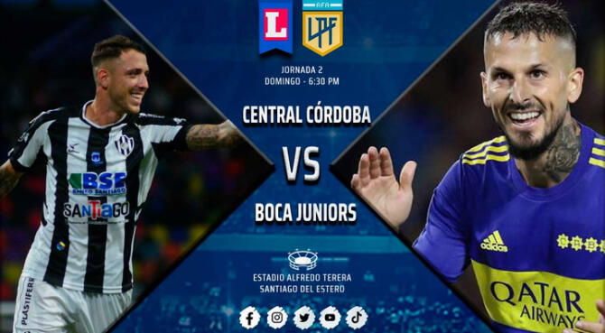
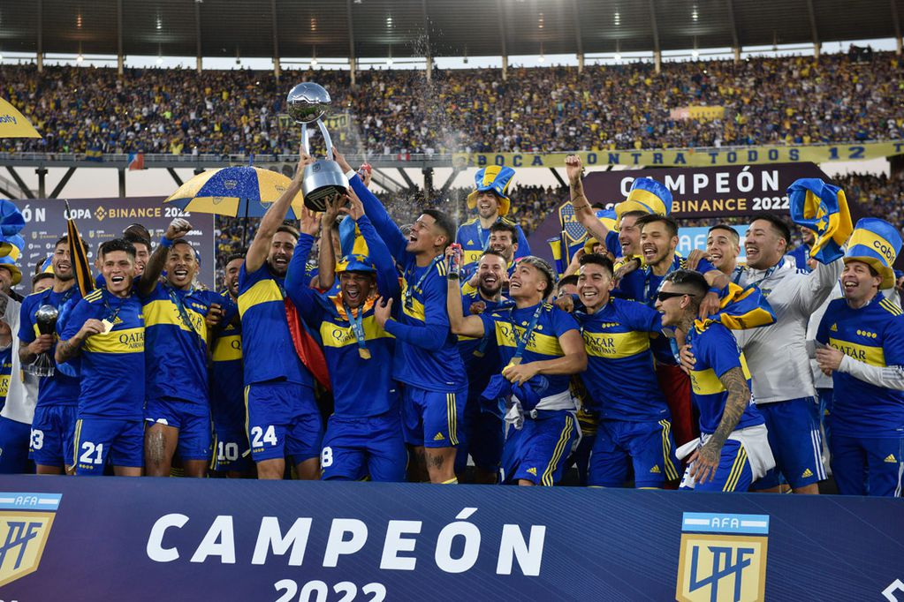

Hoy 20:30hs Boca - Central Cordoba

Boca Juniors visita a Central Córdoba de Santiago del Estero en el estadio Madre de Ciudades, en partido de la duodécima fecha de la zona 2 de la Copa de la Liga Profesional de Fútbol, con arbitraje de Yael Falcón Pérez y las siguientes formaciones:
Central Córdoba (SdE): Cristopher Toselli; José Gómez, José Leguizamón, Matías Di Benedetto y Franco Sbuttoni; Matías Laba, Jesús Soraire, Francisco González Metilli y Jonathan Bay; Renzo López y Claudio Riaño. DT: Sergio Rondina.
Boca Juniors: Javier García; Luis Advíncula, Gabriel Aranda, Marcos Rojo y Agustín Sandez; Diego González, Guillermo Fernández y Oscar Romero; Eduardo Salvio, Darío Benedetto y Sebastián Villa. DT: Sebastián Battaglia.
Boca Campeon en Cordoba: 3 - 0 a Tigre y se quedo con la Copa de la Liga

Boca Juniors aplastó 3-0 a Tigre en la final de la Copa de la Liga Profesional y es el campeón del torneo argentino. Lo hizo ante más de 55 mil personas en el estadio Mario Alberto Kempes. Y su público deliró en la ciudad de Córdoba. Los dirigidos por Sebastián Battaglia fueron efectivos y terminaron festejando con justicia.
Marcos Rojo le dio la ventaja a Boca con un cabezazo a los 48 minutos del primer tiempo. El defensor del Xeneize les ganó a todos en el área y sacó un remate que no pudo contener el arquero Marinelli.
El segundo gol llegó a los 22 minutos del segundo tiempo, cuando mejor estaba Tigre. Fue obra y arte de Frank Fabra, con un tremendo zurdazo desde afuera del área.
El tercer gol fue de Luis Vázquez, a los 40 minutos del segundo tiempo, cuando Tigre ya estaba jugado en ataque buscando el descuento..